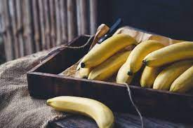

Raw
Banana
split

Y will need:
Bananas
Peanut butter
Date syrup
Sesame/chia seeds or whatever
Instructions:
Cut
bananas
Put peanut butter on it
Splash with date syrup
Add seeds
Eat
Back to main page ↩